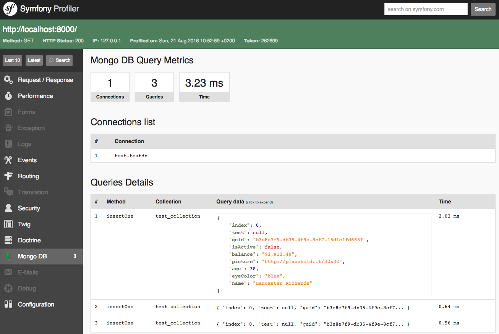

Adding Event Sourcing
to an existing PHP project
(for the right reasons)
Alessandro Lai / @AlessandroLai
SymfonyCon 2019 - November 21st-22nd 2019, Amsterdam
Who am I?
- Alessandro Lai
-
Project lead @

- @Jean85
- @AlessandroLai
- PHP UG Milan Coordinator
- PHP-FIG Secretary
What is this talk about?
Disclaimer 0:
It's a group effort!
The Facile.it Shark team
Disclaimer 1:
We got help!
First things first:
What's Event Sourcing?
The prime example:
Money transactions, without events...
With events, instead...
And CQRS?
It's normally opposed to CRUD,
see Martin Fowler's article
It's a design pattern, it stands for:
- Command (write)
- Query (read)
- Responsibility
- Segregation
Story time!
In the real world...
- Adding event sourcing from the beginning is costly
- Business complexity comes only with time
Project Background
Our use case
-
The Shark team works on the
Facile Partner Network (FPN) project - It's a B2B platform for car insurance brokering
-
We offer the platform to insurance agents
that already have their own physical business
Complex domain
- The project is 8+ years old (started from SF1)
- We handle the product after it's sold
- We have to be an adapter for a lot of processes
Our issues
- Business rules evolve really fast!
- New reports are requested often
Our solutions
- Gabriele
- MongoDB
- Event sourcing
Events in practice
Anatomy of an event
- Type
- Family
- Payload
- Metadata
{
"_id" : ObjectId("5898ab5a22c92d69123f7281"),
"type" : "agendaCreated",
"eventFamily" : "agenda",
"meta" : {
"createdAt" : ISODate("2017-02-06T17:59:05"),
"receivedAt" : ISODate("2017-02-06T17:59:06"),
"currentUserId" : 29877,
"taskId" : 3503425,
"productId" : 5937725,
...
},
"payload" : {
"currentUser" : {
"id" : 29877,
...
},
"task" : {
"id" : 3503425,
...
},
"product" : {
"id" : 5937725,
...
}
...
}
}
Event fields
- Type: event name
- Family: generic event grouping
-
Metadata: generic event info,
createdAt - Payload: event informations
Storing events
- Symfony Event Dispatcher
- Base event + decorators
- We didn't have enough confidence with MongoDB...
Real-time (delayed) storing
- ... so we used our (RabbitMQ) queue
Generating events for the past
- The trade-off allowed us to easily back-fill events
It's time to read!
Projections
- Aggregated result of multiple events
-
They are produced replaying events one at a time,
and using them to reconstruct the desired result
Our implementation
| Classes | Documents |
|---|---|
|
|
The (one and only) Runner
class Runner
{
public function run(ProjectorInterface $projector);
}
The RunState document
Used by the runner to persist execution state
class RunState implements MongoDocumentInterface
{
/** @var string The Projector FQCN */
private $class;
/** @var bool */
private $stillRunning;
/** @var \DateTimeInterface */
private $lastRunAt;
/** @var Mongo\ObjectId */
private $lastMaxId;
/** @var \DateTimeInterface */
private $lastProjectedEventCreatedAt;
}
The Projectors
interface ProjectorInterface
{
// projection execution
public function initializeProjector();
public function projectAndSave(Event $event): Result;
public function normalizeAfterRun(\DateTime $from, \DateTime $to);
// event filters
public function getEventTypes(): array;
public function getAdditionalEventFilters(): array;
}
Runner::run()Pre-execution checks
$runState = $this->loadRunState($projector);
$iterator = $this->loadIterator($runState, $projector);
$event = $iterator->rewind();
if (! $iterator->valid()) {
return $this->updateRunStateOnAccomplished($runState, $lastEvent);
}
if ($this->isInvalidRun($runState, $event)) {
$runState->setLastProjectedCreateAt($event->getCreatedAt());
$runState->setStopped(true);
$this->persistanceManager->save($runState);
return $this->run($projector);
}
$this->updateRunStateOnStarted($runState);
// ...
Runner::run()The loop
do {
$lastEvent = $iterator->current();
$projector->projectAndSave($lastEvent);
if ($this->shouldStop($start, $projector)) {
$this->updateRunStateOnStopped($runState, $lastEvent);
break;
}
} while ($iterator->next());
$projector->normalizeAfterRun(
$firstEvent->getCreatedAt(),
$lastEvent->getCreatedAt()
);
$this->updateRunStateOnAccomplished($runState, $maxId, $lastCreatedAt);
The executors
The Projector delegates the calculations
to a group of Executor classes
interface ExecutorInterface
{
public function supportEventsType(): array;
public function execute(Event $event): Result;
}
class SomeProjector implements ProjectorInterface
{
public function projectAndSave(Event $event): Result
{
return $this->getExecutor($event)->execute($event);
}
}
Intermediate state and correlation
- Executors must be idempotent
-
ProjectionStatestores additional information
class ProjectionState implements MongoDocumentInterface
{
/** @var string The Projector FQCN */
private $class;
/** @var string */
private $correlationId;
/** @var mixed */
private $data;
/** @var \DateTime|null */
private $expireAt;
}
Reducing the amount of data
-
Delete
ProjectionStateASAP -
ProjectionStates::$expirationDate
makes data disappear
db.projection_state.createIndex(
{ "expireAt": 1 },
{ expireAfterSeconds: 0 }
);The real trick: pushing state away
-
Every class is stateless:
no properties contain data, only dependencies -
When we have state
(RunState,ProjectionState, the projection itself) we save it as documents on MongoDB
Practical issues
The runner
- Events can only increase We started at 1.8M, we're now reaching 35M events
- Long running processes
- Fix: short burst executions
Updating past events
- We forgot to add some payload data...
- Fix: The trade-off paid again
- Report outages during rewrites
- Fix: snapshots
Projections and code reuse
-
Tempting to reuse
Executorscode...
What we gained
We reached our goal!!!
- New complex reports
- MongoDB
Projection reuse
Events Projector Projection (intermediate)
Projection aggregation Final result (snapshot)
Complexity split
Small context, easily testable
| Runner | ||
| Projector1 | Projector2 | Projector3 |
| Executor1a | Executor2a | Executor3a |
| Executor1b | Executor2b | Executor3b |
| ... | ... | ... |
Debug superpowers
Since we have events, we know EVERYTHING
Investigating a strange bug report
is now easier than ever
Our Symfony bundle
-
facile-it/mongodb-bundle -
Barebone integration with
ext-mongodb -
Nice profile addon

Thanks!
Contacts
- alessandro.lai85@gmail.com
- alessandro.lai@facile.it (we are hiring!)
- @Jean85
- @AlessandroLai
Attributions
- money, flickr photo by khrawlings shared under a Creative Commons (BY-NC) license
- Going to a movie that Doug chose - one of the Little Things....., flickr photo by Bennilover shared under a Creative Commons (BY-ND) license
- window2, flickr photo by Pascale Doria shared under a Creative Commons (BY) license
- mess, flickr photo by i ♥ happy!! shared under a Creative Commons (BY) license
Additional references
-
Greg Young - Event Sourcing
Talk - GOTO 2014 conference -
Mathias Verraes - Messages over Structure
Keynote - Neos 2017 conference -
Martin Fowler - The Many Meanings of Event-Driven Architecture
Keynote - GOTO 2017 conference -
Marco Pivetta - Basic CQRS and Event Sourcing with Prooph
Workshop - WebSC 2017